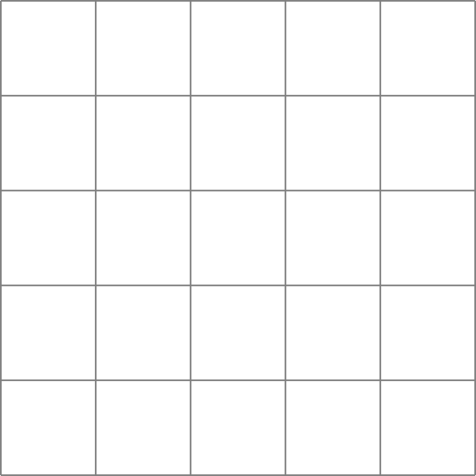
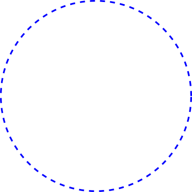
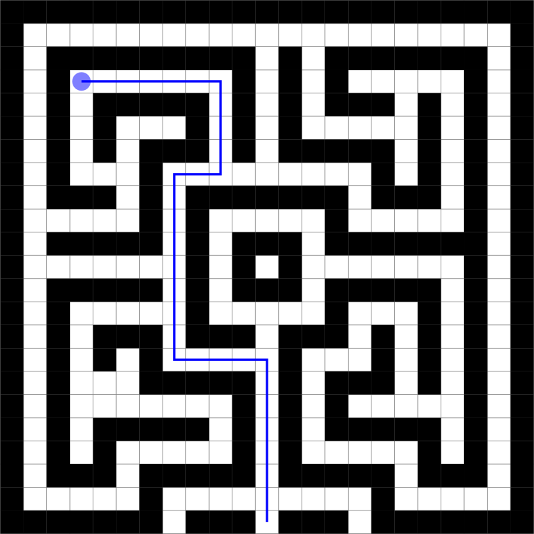
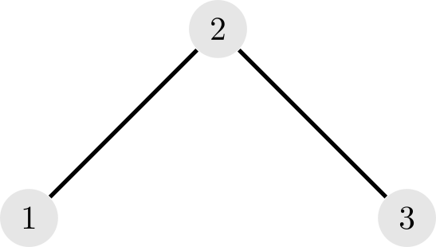
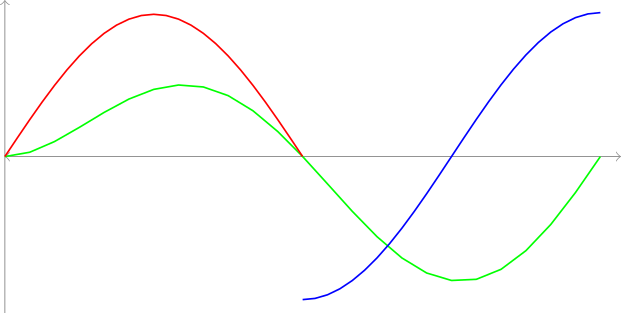
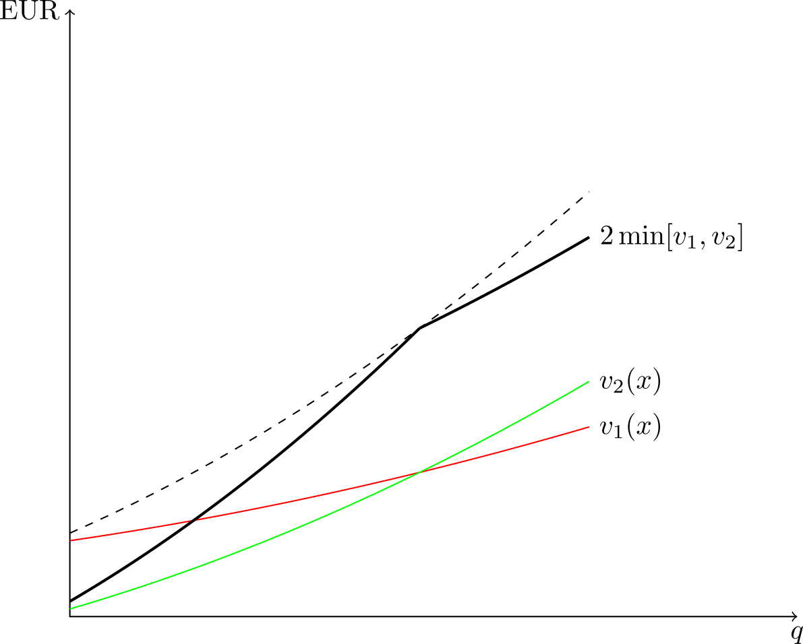

Summary. Quick demo of how to make figures with TikZ in DocOnce.
TikZ
is a very strong tool for making figures in LaTeX. DocOnce supports such
figures: if a figure file myfig exists in a version myfig.tikz,
DocOnce will, in case of latex or pdflatex output, utilize the
myfig.tikz figure directly. The problem is what do to with other
output formats. In HTML formats (html and sphinx),
one can use a corresponding SVG version of the figure,
and for more primitive formats, one needs a plain PNG
version. DocOnce will automatically create such versions of the figure
and store them along with myfig.tikz, as is done when other figure
formats need automatic conversion.
Figure 1: This shape is commonly referred to as a straight line.
The most fundamental shape is the line in Figure 1. See the
source code
for how this TikZ figure is defined in LaTeX as a file line.tikz
(and included in DocOnce through FIGURE: [line] caption). Such
lines can be combined to form other shapes, e.g., a square
as in Figure 2.
Figure 2: This square is formed by four straight lines.
A grid can also be made from straight lines.
Figure 3: This is a grid with 5 x 5 cells

A circle, however, cannot be formed by a finite number of straight lines. It requires special code.
Figure 4: This circle is drawn in blue with a dashed line.

(kgh 1: filenames identical to words in the texts have been known to cause problems) (hpl 2: Not anymore?)
Figure 5: A maze can be drawn by combining the elements above.

Figure 6: TikZ is quite well suited to draw graphs.

TikZ can be used to plot functions. The next figure will be inlined.

See the source code for how you make this figure.
Figure 7: The functions can even be labeled!

All details are in the source code.